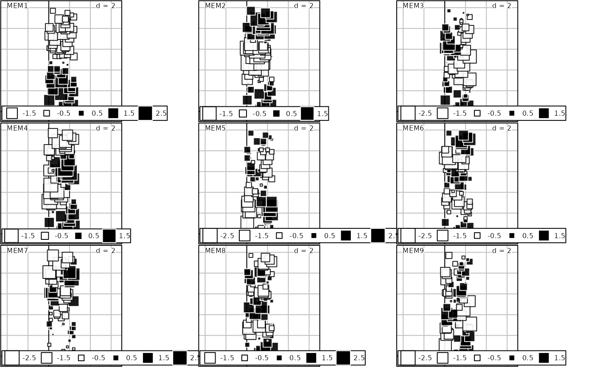

R/scores.listw.R
mem.RdThese functions compute MEM (i.e., eigenvectors of a doubly centered spatial weighting matrix). Corresponding eigenvalues are linearly related to Moran's index of spatial autocorrelation.
scores.listw(
listw,
wt = rep(1, length(listw$neighbours)),
MEM.autocor = c("non-null", "all", "positive", "negative"),
store.listw = FALSE
)
mem(
listw,
wt = rep(1, length(listw$neighbours)),
MEM.autocor = c("non-null", "all", "positive", "negative"),
store.listw = FALSE
)
orthobasis.listw(
listw,
wt = rep(1, length(listw$neighbours)),
MEM.autocor = c("non-null", "all", "positive", "negative"),
store.listw = FALSE
)
# S3 method for orthobasisSp
[(x, i, j, drop = TRUE)
| listw | An object of the class |
|---|---|
| wt | A vector of weights. It is used to orthogonalize the eigenvectors. It could be useful if MEM are used in weighted regression or canonical correspondence analysis |
| MEM.autocor | A string indicating if all MEMs must be returned or only
those corresponding to non-null, positive or negative autocorrelation. The
difference between options |
| store.listw | A logical indicating if the spatial weighting matrix
should be stored in the attribute |
| x | An object of class |
| i, j | Elements to extract (integer or empty): index of rows (i) and columns (j). |
| drop | A logical. If TRUE, object containing only one colum is converted in vector |
An object of class orthobasisSp , subclass orthobasis.
The MEMs are stored as a data.frame. It contains several attributes
(see ?attributes) including:
listw: The associated spatial
weighting matrix (if store.listw = TRUE).
Testing the nullity of eigenvalues is based on E(i)/E(1) where E(i) is i-th eigenvalue and E(1) is the maximum absolute value of eigenvalues
Dray, S., Legendre, P., and Peres-Neto, P. R. (2006). Spatial modeling: a comprehensive framework for principal coordinate analysis of neighbor matrices (PCNM). Ecological Modelling 196, 483--493.
Griffith D. A. (1996) Spatial autocorrelation and eigenfunctions of the geographic weights matrix accompanying geo-referenced data. Canadian Geographer 40, 351--367.
Stéphane Dray stephane.dray@univ-lyon1.fr
if(require("ade4", quietly = TRUE) & require("spdep", quietly = TRUE)){ data(oribatid) nbtri <- tri2nb(as.matrix(oribatid$xy)) sc.tri <- scores.listw(nb2listw(nbtri, style = "B")) summary(sc.tri) }#> Orthonormal basis: data.frame with 70 rows and 69 columns #> ---------------------------------------------------------------- #> Columns form a centred orthonormal basis (i.e. 1n-orthogonal) #> for the inner product defined by the 'weights' attribute #> ---------------------------------------------------------------- #> #> Attributes: #> - names: MEM1 ... MEM69 #> - row.names: 1 ... 70 #> - weights: 0.01428571 ... 0.01428571 #> - values: 0.07805391 ... -0.04134591 #> - class: orthobasisSp orthobasis data.frame #> - call: scores.listw(listw = nb2listw(nbtri, style = "B")) #>if(require("adegraphics", quietly = TRUE)){ s.value(oribatid$xy,sc.tri[,1:9]) plot(sc.tri[,1:6], oribatid$xy, pSp.cex = 5, pSp.alpha = 0.5, pbackground.col = 'lightblue') }#> Error in h(simpleError(msg, call)): error in evaluating the argument 'obj' in selecting a method for function 'coordinates': object 'sc.tri' not found